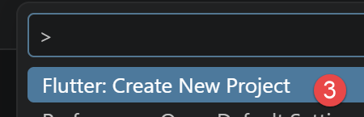
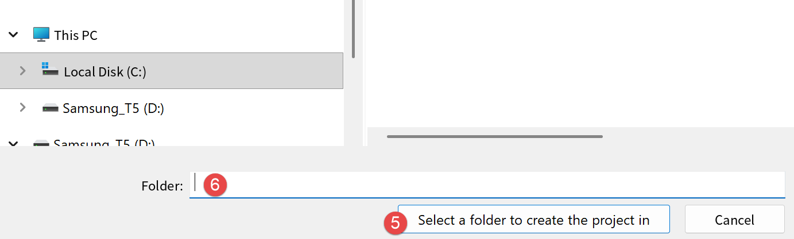

2. Configuração do ambiente de trabalho
2.1. Instalação das ferramentas
-
Node.js: baixe e instale a versão 22 (ou posterior) em nodejs.org. Verifique a instalação em um terminal:
-
Visual Studio Code (VSCode): disponível para download gratuito em code.visualstudio.com. Instale a extensão [Flutter] (que também instala a extensão [Dart]).
-
[MySQL] 8: instale, por exemplo, por meio do XAMPP, Laragon (no Windows) ou diretamente pelo [MySQL] Community Server. Uma ferramenta gráfica de administração (phpMyAdmin, [MySQL] Workbench, DBeaver, HeidiSQL…) simplifica o trabalho. Mais adiante, usa-se a ferramenta Laragon.
2.2. Instalação do cliente Flutter
Inicie o VSCode sem especificar um projeto:

- Em [1-2], abra a paleta de comandos;

- Em [3], crie um novo projeto Flutter;

- em [4], crie um aplicativo;

- Em [5-6], especifique uma pasta onde a subpasta do projeto será criada;

- em [6], dê um nome ao projeto. Esse será também o nome da pasta criada para o projeto;

- Em [1-3], especifique os alvos do projeto em [1 – aplicativo Android, 2 – aplicativo desktop, 3 – aplicativo web];

- em [4], o projeto criado. O VSCode baixa automaticamente o SDK do Flutter;
O comando [flutter doctor] verifica se tudo o que o [Flutter] precisa está no lugar, alvo por alvo. Execute-o em um terminal do VSCode no projeto Flutter recém-criado:
Quando tudo estiver correto, você obterá um resultado como este (os números de versão podem variar):
Cada linha começa com um símbolo: [√] (tudo certo), [!] (aviso: falta um elemento, o que não impede necessariamente o código de funcionar) ou [X] (erro). Para este curso, as linhas relevantes são [Flutter], [Android toolchain] (compilação para um celular), [Android] e [Connected device] (pelo menos um dispositivo detectado, especificamente o celular). As linhas [Chrome] (alvo web) e [Visual Studio] (alvo Windows) aplicam-se apenas a esses alvos: um [!] ou um [X] em um alvo que você não usa pode ser ignorado.
Se o [Android toolchain] informar “cmdline-tools component is missing”, instale o [Android SDK Command-line Tools] (veja abaixo); se informar “Android license status unknown”, aceite as licenças (etapa 5). O comando [flutter doctor -v] fornece detalhes sobre cada verificação.
Agora, liste os aplicativos (dispositivos) reconhecidos pelo Flutter:
Na coluna 2, você encontra os IDs dos dispositivos reconhecidos. Para iniciar o aplicativo Flutter em um deles:
Por exemplo, para iniciar o aplicativo [flutter_application_1] no navegador Edge:
O seguinte resultado aparece no navegador Edge:

Descreveremos agora como instalar as ferramentas para o desenvolvimento Android.
2.3. Android Studio e ferramentas de linha de comando do Android
O dispositivo-alvo deste curso é um celular [Android]. Para compilar o aplicativo e instalá-lo nesse celular, o [Flutter] precisa do SDK do [Android], que é instalado junto com o [Android Studio], o ambiente de desenvolvimento do Google. O [Android Studio] não é usado para escrever código — o editor continua sendo o [VSCode] —; ele serve aqui apenas para instalar e atualizar o SDK do [Android].
- [Android Studio]: baixe-o gratuitamente em [https://developer.android.com/studio] e instale-o. Ao iniciá-lo pela primeira vez, o assistente oferecerá uma instalação padrão: aceite-a, e ele baixará o SDK do [Android].

- Abra o [SDK Manager] a partir do [Android Studio] (o menu [Tools / SDK Manager] quando um projeto está aberto, ou [More Actions / SDK Manager] na tela inicial): é ele que instala e atualiza os componentes do SDK do [Android].
- Aba [SDK Platforms]: verifique se uma plataforma [Android] recente está instalada (a documentação do [Flutter] especifica a versão 36 no momento da redação).

- Aba [SDK Tools]: marque [Android SDK Command-line Tools (latest)], [Android SDK Build-Tools] e [Android SDK Platform-Tools] (bem como o [Android Emulator] se quiser testar em um emulador) e clique em [Apply]. A documentação do [Flutter] também recomenda o [CMake] e o [NDK (Side by side)]. São os pacotes [Android SDK Command-line Tools] que estão faltando quando o [flutter doctor] exibe “cmdline-tools component is missing”.
- Aceite as licenças do SDK do [Android] digitando o comando a seguir em um terminal dentro do projeto Flutter e respondendo “[y]” a cada pergunta até ver a mensagem “All SDK package licenses accepted.”:
[Nota]: com a versão 23.0 do [Android SDK Command-line Tools], o comando acima pode terminar imediatamente, sem perguntar nada, exibindo “The --licenses option is no longer needed.” Trata-se de um problema conhecido do [Flutter] (issues 191558 e 191487 em github.com/flutter/flutter). Solução alternativa: no [SDK Manager], aba [SDK Tools], marque [Show Package Details], substitua a versão 23.0 do [Android SDK Command-line Tools] pela versão 22.0, clique em [Apply] e execute o comando novamente.
2.4. Configuração de um emulador Android
Se você não tem um celular, pode testar o aplicativo em um emulador [Android]: um celular virtual que é executado em uma janela do computador. O [Android Studio] instala o programa [Android Emulator] (se ele tiver sido marcado no [SDK Manager], veja acima), mas não fornece um dispositivo virtual pronto para uso: é preciso criar um.
- [Pré-requisito]: a virtualização deve estar habilitada na [BIOS] do computador e, no [Windows], o recurso [Windows Hypervisor Platform] deve estar marcado ([Control Panel / Programs / Turn Windows features on or off]), o que exige uma reinicialização. Caso contrário, o emulador não iniciará ou ficará muito lento.
- Abra o [Device Manager] a partir do [Android Studio]: [More Actions / Virtual Device Manager] na tela inicial ou [Tools / Device Manager] quando um projeto está aberto (dependendo da versão: [View / Tool Windows / Device Manager]).

- Clique em [Create Device], selecione um modelo (por exemplo, [Pixel 8]) e depois [Next]. Selecione uma imagem de sistema [Android] recente para o processador [x86_64] e baixe-a usando o link [Download] ao lado dela; depois, clique em [Next] e em [Finish].


- Inicie o emulador usando o botão [Play] do [Device Manager]:

- Aguarde até que a tela inicial do [Android] apareça na janela do emulador: a primeira inicialização pode levar vários minutos. Em seguida, verifique se o [Flutter] reconhece o emulador, que deve aparecer na lista (por exemplo, [emulator-5554], plataforma [android-x64]):
[Nota]: se o comando [flutter devices] não exibir o emulador, mas mostrar a mensagem “Device emulator-5554 is offline”, o emulador não terminou de iniciar ou o [adb] (a ferramenta que conecta o computador ao dispositivo, instalada junto com o [Android SDK Platform-Tools]) está em um estado inconsistente. Tente o seguinte, nesta ordem: (1) aguarde a tela de boas-vindas aparecer e execute o comando novamente; (2) reinicie o [adb] com os três comandos a seguir (no [Windows], no [PowerShell]), sendo que o último deve exibir “device” em vez de “offline”; (3) no menu do dispositivo em [Device Manager] ([⋮]), selecione [Cold Boot Now] ou, em último caso, [Wipe Data].
Se o problema persistir, use [where.exe adb] para verificar se não há outro [adb], de uma versão diferente, presente no [PATH]: duas versões do [adb] disputando a conexão causam esse problema.
Depois que o emulador for reconhecido, o aplicativo é iniciado nele com o comando a seguir (veja a seção “Instalação e execução”):

Preparação do celular Android
Para executar o aplicativo em um celular [Android] real, o celular deve ser configurado para permitir o controle a partir do computador:
- Habilite as opções do desenvolvedor: abra [Settings / About phone] e toque várias vezes (geralmente 7) em [Build number] até que o celular indique que você é um desenvolvedor. Os rótulos exatos variam conforme o fabricante.
- Habilite a [USB debugging] no menu [Developer options] (adicionado na etapa anterior).
- Conecte o celular ao computador usando um cabo USB que transfira dados (e não apenas carregue o celular) e aceite, no celular, a solicitação de autorização de depuração USB. No Windows, se o celular não for reconhecido, instale o driver USB do fabricante (“OEM USB drivers”, veja [https://developer.android.com/studio/run/oem-usb]).
- Verifique se o [Flutter] consegue detectar o celular: ele deve aparecer na lista exibida pelo comando a seguir, junto com a plataforma [android]:
O celular acessará o servidor [NestJS] por meio do endereço IP do computador na rede local (e não por meio de [localhost]): essa configuração é descrita no Capítulo 5.